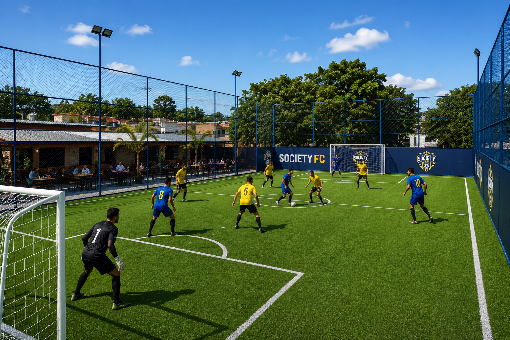
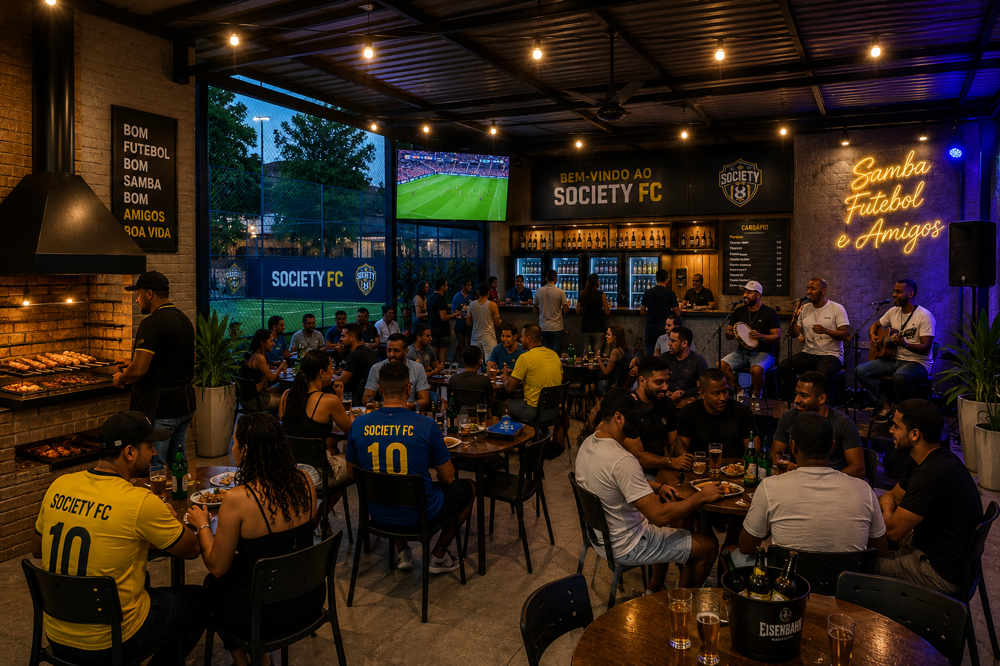

O Society FC, fundado em 2 de maio de 2002, é um verdadeiro símbolo da tradição esportiva
na várzea. Ao longo de décadas, construiu uma história marcada por conquistas, dedicação e
amor pelo futebol, tornando-se referência dentro e fora das quatro linhas.
Multicampeão em diversas competições, o clube se destacou em todas as categorias, formando
gerações de atletas e fortalecendo o espírito esportivo na comunidade. Seu compromisso com o
desenvolvimento do futebol vai além das equipes masculinas, sendo também protagonista no cenário
feminino, onde acumula títulos e incentiva a participação e o crescimento das mulheres no esporte.
Mais do que um clube, o Society FC é um ponto de encontro, uma paixão compartilhada e um legado
que atravessa gerações. Sua história continua sendo escrita a cada jogo, a cada campeonato e a
cada novo talento que veste seus núcleos com orgulho.
Gramado preparado e iluminação para jogos noturnos.
Espaço ideal para aniversários, confraternizações e eventos.
Churrasqueira reservada para curtir com amigos e família.
Bebidas geladas e opções de lanches no local.


Praça Charles Miller - Pacaembu, São Paulo - SP
Arena Society FC
Segunda a Sexta:
9h às 22:30h
Sábado:
9h às 23h
Domingo:
9h às 22h